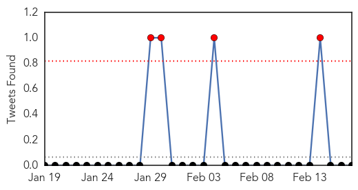
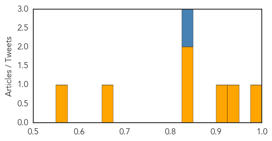

MERS
30-Day Web Trend
13 alerts, 0 warnings

30-Day Twitter Trend
4 alerts, 0 warnings

Article Locations

Article Confidences

Top Articles:
- 0.997
- All persons exposed to nurse with MERS-CoV test negative for virus — DOH
- 0.994
- News Scan for Feb 17, 2015
- 0.993
- DOH: 3 suspected MERS-CoV cases negative
- 0.991
- DOH: Only 2 under MERS-CoV check
- 0.985
- Cebu News, The Freeman Sections, The Freeman
- 0.909
- (MERSCOV monitoring:) Swab results on 4 plane passengers out on Feb. 19
- 0.894
- 4 Saudi Flight 860 passengers placed on home quarantine
Top Tweets:
- 0.677
- AFD Blog `Saudi MOH Announces 5 More MERS Cases' MERS-CoV http://t.co/mbtIl1QfV8
- 0.627
- AFD Blog `@WHO MERS-CoV Update – Saudi Arabia' http://t.co/wVmoIOcYF4
Dengue Fever
30-Day Web Trend
2 alerts, 0 warnings

30-Day Twitter Trend
5 alerts, 0 warnings

Article Locations

Article Confidences
Top Articles:
- 0.996
- Plan to Equip Private Doctors to Take on Flu
- 0.926
- Watch Out for Dengue Fever: Jakarta Health Agency
- 0.913
- will climate change affect the spread of tropical diseases?
- 0.844
- Satellites help predict outbreaks of disease
- 0.829
- Satellites help predict outbreaks of disease
- 0.672
- Biker doc rides into dengue areas - Nation
- 0.556
- Government creates epidemic fund
Top Tweets:
- 0.967
- Flavivirus news: The Ebola virus, Dengue fever, Malaria: U.S., Asian Military Medics ... - DVID... http://t.co/yfLsFbZsii pathogenposse